O que é o Validador Fiscal
O Validador Fiscal é um sistema de validação e conferência de valores fiscais: ele cruza o que foi declarado (PGDAS, DAS) com o que apura a partir das notas, apontando divergências antes da entrega.
Para que serve
- Validar valores: compara DAS calculado x declarado, receitas e retenções, destacando diferenças.
- Simular cenários: você pode lançar valores fictícios (notas/receitas) para simular a apuração e ver o impacto antes de oficializar.
- Automatizar o cálculo: apura automaticamente o Simples Nacional (faixas, anexos e Fator R) e o Lucro Presumido (IRPJ, CSLL, PIS, COFINS).
Primeiros passos
Ao abrir o Validador Fiscal pela primeira vez, você verá a tela de ativação. A licença libera todos os módulos do sistema.
Ativando o sistema
- Na tela de ativação, veja o Identificador desta máquina e clique em
Copiar Código. - Clique em
Falar com o Suportepara enviar o código e receber sua chave de ativação. - Cole a chave no campo Chave de Ativação e clique em
Ativar Sistema. - Pronto — o sistema abre no Dashboard, sua visão geral.
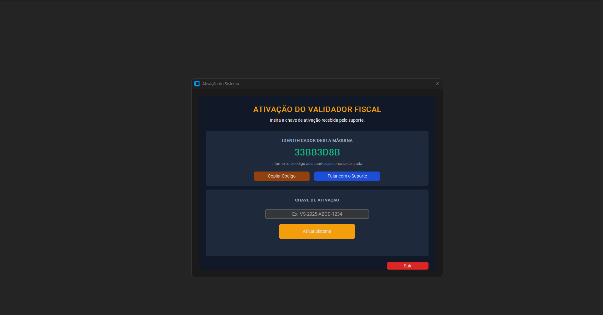
Depois de ativar, o Dashboard mostra um panorama por empresa: contadores de DAS OK, sem DAS declarado e com divergência, além de um cartão por empresa com os botões Validar, Publicar e Histórico.
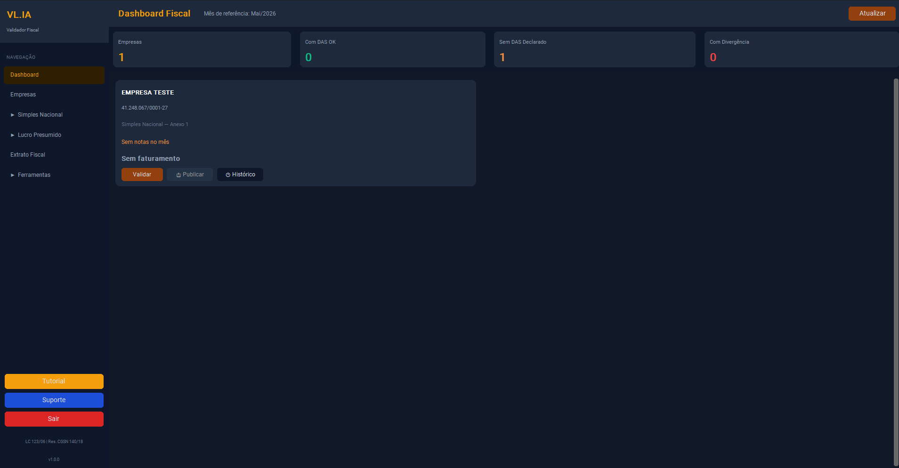
Cadastrando empresas
Tudo no sistema gira em torno das empresas. Cadastre cada cliente antes de importar notas ou calcular tributos. Na tela Empresas você vê a lista cadastrada e, no topo, os botões + Nova Empresa, Importar Excel (cadastro em massa) e Exportar Modelo.
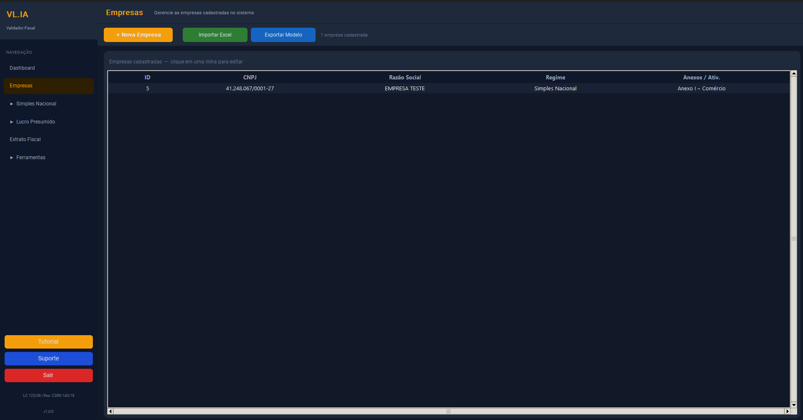
Nova empresa
- Clique em
+ Nova Empresa. - Informe o CNPJ (a pontuação é aplicada automaticamente enquanto você digita) e a Razão Social.
- Escolha o Regime: Simples Nacional ou Lucro Presumido.
- No Simples, marque o(s) Anexo(s) (I a V); no Lucro Presumido, escolha o Tipo de Atividade.
- Clique em
Salvar. A empresa passa a aparecer em todos os módulos.
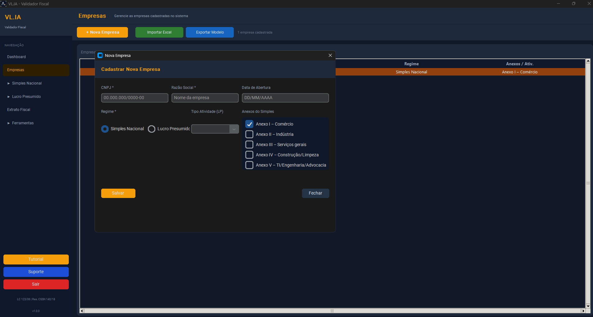
Exportar Modelo, preencha a planilha e importe com Importar Excel.Credenciais dos portais
Para baixar notas automaticamente, o sistema precisa das credenciais de acesso de cada empresa ao Portal Nacional NFS-e. Há dois modos.
Certificado digital (A1) recomendado
Empresas com certificado digital A1 (.pfx) usam a API oficial — mais rápido, sem captcha e em lote.
- Na empresa, escolha o modo Certificado.
- Selecione o arquivo
.pfxe informe a senha do certificado.
Login e senha
Empresas sem certificado acessam o portal por usuário e senha.
- Escolha o modo Senha.
- Informe o CPF/CNPJ de acesso e a senha do portal.
Notas Fiscais
Em Simples Nacional ▸ Notas Fiscais você importa, baixa e consulta as NFS-e e NF-e de cada empresa. No topo ficam as ações + Nova Nota Manual, Importar XML/ZIP, Baixar via SIEG, Portal Nacional NFS-e e Excluir em Lote. Os filtros (Empresa, Ano, Mês, Tipo) e os painéis CFOP/NCM ajudam na análise.
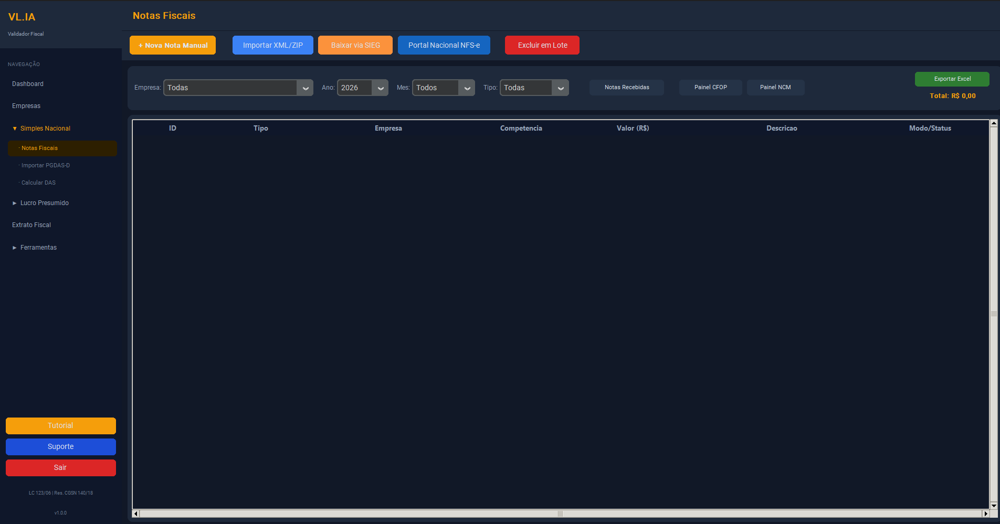
Importar XML manualmente
- Clique em
Importar XML/ZIP. - Selecione um ou vários arquivos
.xmlou.zip. - O sistema identifica o tipo (NFS-e / NF-e), importa e ignora duplicatas.
Baixar do Portal Nacional
- Clique em
Portal Nacional NFS-e. - Informe a competência (mês/ano) — ou um intervalo De/Até.
- Escolha Emitidas ou Recebidas.
- Marque as empresas e clique em Iniciar Download.
- O sistema baixa os XMLs e importa automaticamente.
Baixar via SIEG
Para usar Baixar via SIEG, primeiro cadastre seu usuário e senha do SIEG em Ferramentas ▸ Configurações (seção Automação SIEG). Sem essas credenciais, o download não autentica.
Importar PGDAS-D
O módulo Importar PGDAS-D lê a declaração do Simples Nacional (PDF) e consolida o histórico de receitas automaticamente. É assim que você traz os valores retroativos dos meses anteriores — essenciais para compor o RBT12 (receita bruta dos últimos 12 meses) e, com ele, a faixa e a alíquota corretas da apuração.
Importação
- Acesse
Simples Nacional ▸ Importar PGDAS-D. - Clique em
Selecionar PDFs(ouSelecionar Pastapara vários de uma vez). Quem usa o e-CAC pode clicar emBaixar via e-CAC. - Clique em
Analisar: o sistema extrai os valores e mostra um preview das receitas consolidadas. - Se uma competência já existir, escolha Manter existente ou Substituir pelo PGDAS.
- Clique em
Importar Tudo.
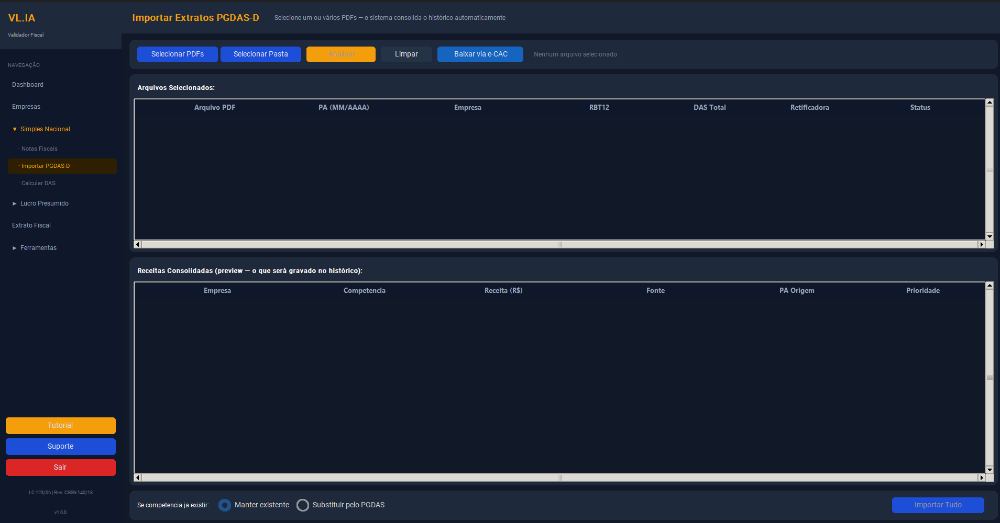
Calcular DAS (Simples Nacional)
Com as notas importadas, o sistema apura o DAS conforme a LC 123/06 e a Resolução CGSN 140/18, e compara com o PGDAS declarado.
Apuração
- Acesse
Simples Nacional ▸ Calcular DAS. - Selecione a Empresa e o Ano e clique em
Calcular. - Os cartões mostram RBT12, Faixa Predominante, Alíquota Efetiva, DAS Total e Status.
- Clique na linha do mês e em
Visualizar Memóriapara ver o cálculo detalhado. - Informe o DAS Declarado (opcional) para ver a Divergência em R$ e %.
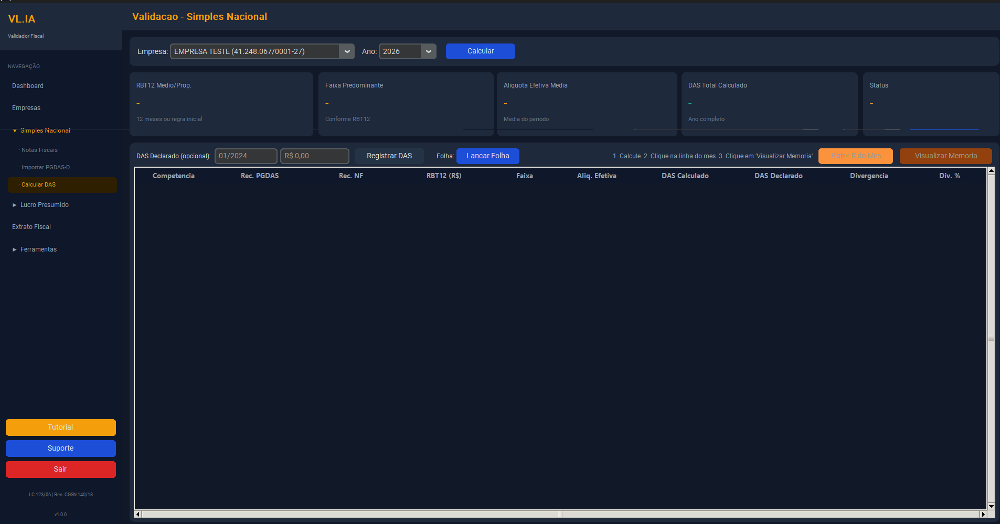
Memória de cálculo
Clique na linha de um mês e em Visualizar Memória para abrir o detalhamento completo da apuração daquela competência — faixa, alíquota nominal e efetiva, parcela a deduzir, Fator R e a repartição dos tributos. É a prova de como cada valor foi obtido.
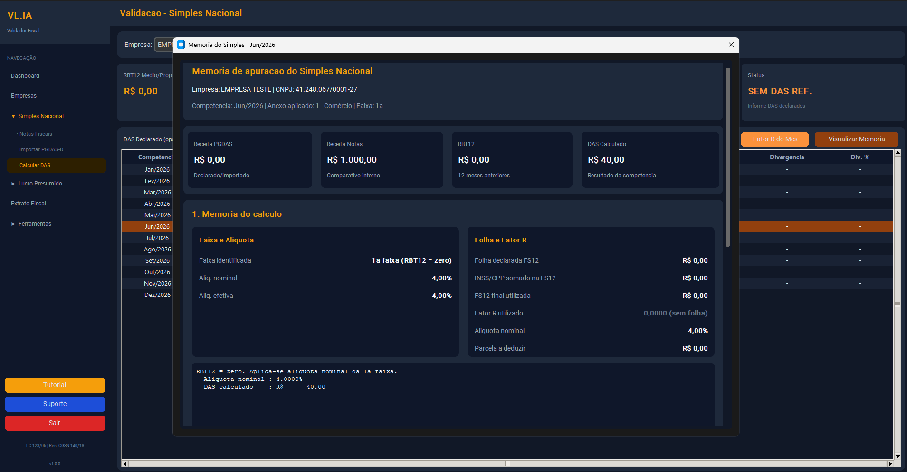
Fator R
Para serviços sujeitos ao Fator R (que podem cair no Anexo III ou no Anexo V), o enquadramento depende da razão entre a folha (FS12) e a receita (RBT12) dos últimos 12 meses. Acesse pelo botão Fator R do Mês, na tela Calcular DAS.
Fator R do mês
O painel detalha o RBT12 e o FS12 (folha + INSS dos 12 meses), o Fator R atual e um alerta quando está abaixo do limite (risco de Anexo V). Traz ainda a Análise de Vantagem — Anexo III vs V: avalia se compensa pagar INSS + IRRF sobre o pró-labore para tributar no Anexo III.
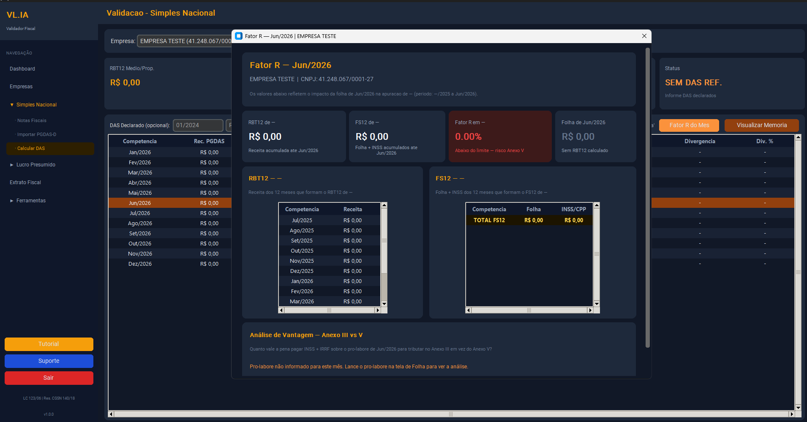
Lançar folha avulsa
Use Lançar Folha para informar a Folha Total e o INSS/CPP do mês (entram no Fator R / FS12). O pró-labore é opcional — usado apenas na análise de vantagem.
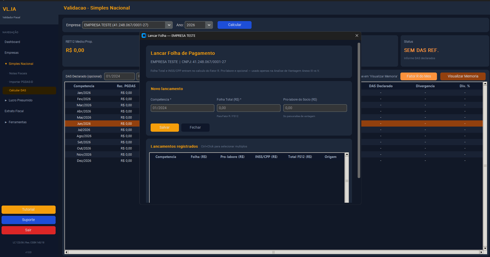
Lucro Presumido
Para empresas no Lucro Presumido, o sistema calcula os tributos federais e o ISS a partir das notas e da atividade.
Cálculo de tributos
- Acesse
Lucro Presumido ▸ Calcular Tributos. - Selecione a empresa e o período de apuração.
- Revise as bases de cálculo e os tributos resultantes.
Extrato Fiscal
O Extrato Fiscal reúne, em um só lugar, a movimentação fiscal da empresa por período — mês a mês, com receita, RBT12, faixa, alíquota efetiva e DAS calculado x declarado.
Gerar extrato
- Selecione a Empresa e o Ano.
- Escolha
Ano CompletoouÚltimos 12 mesese clique emGerar Extrato. - Exporte para
ExcelouPDFquando precisar enviar ao cliente.
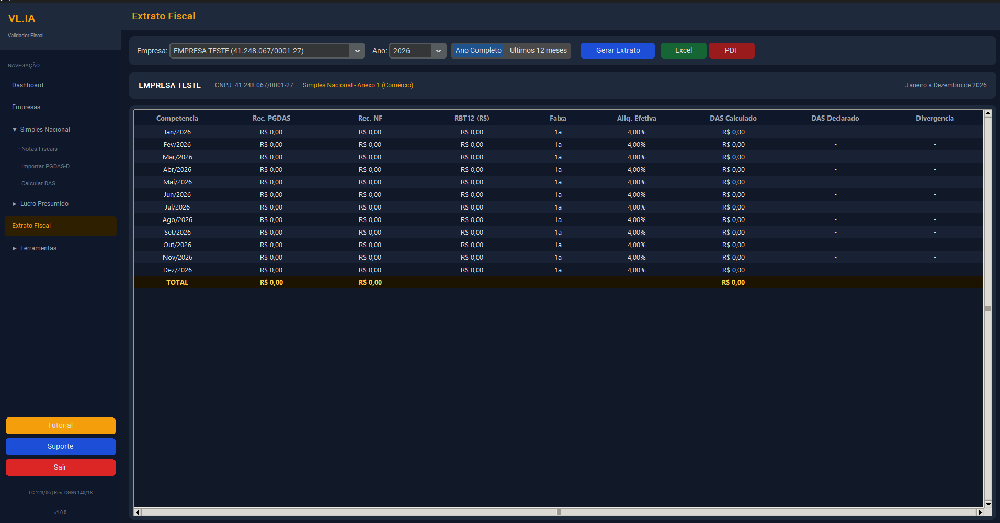
Configurações
Em Ferramentas ▸ Configurações ficam os parâmetros das automações. É aqui que você habilita o download via SIEG:
- Automação SIEG: login, senha, pasta de download, navegador e modo headless (executar oculto) — necessários para o
Baixar via SIEGdas Notas. - Automação e-Auditoria: login usado na classificação automática de NCMs.
Salvar.Suporte
Precisa de ajuda? O botão Suporte, no rodapé da barra lateral, abre o contato direto com a equipe VL.IA.